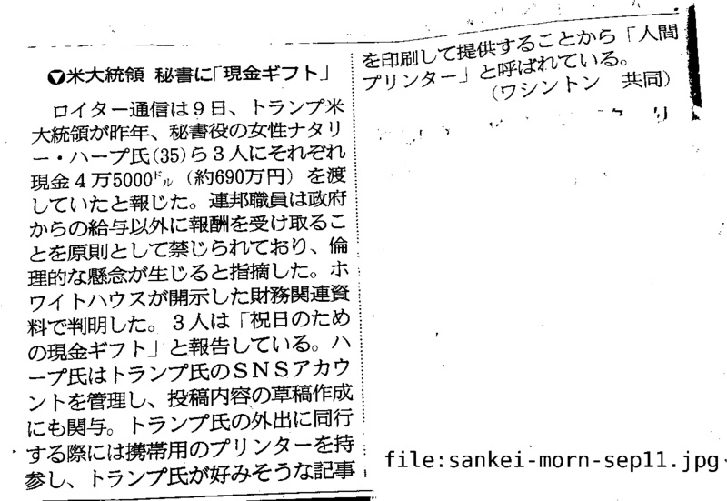
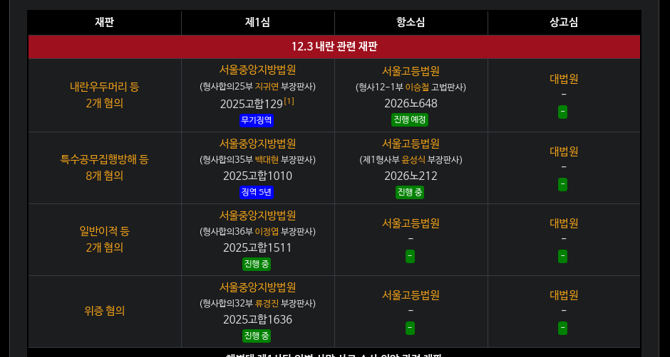
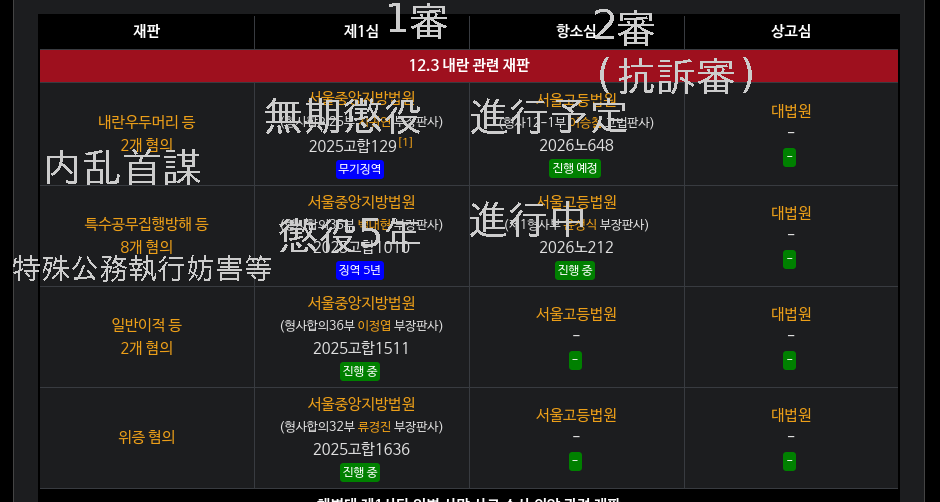
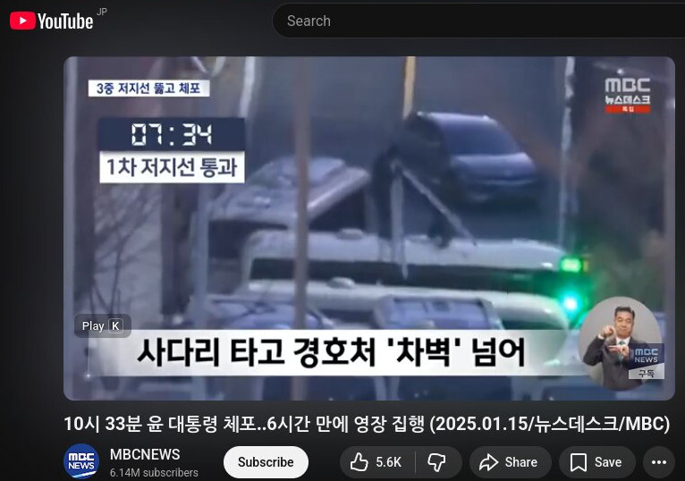
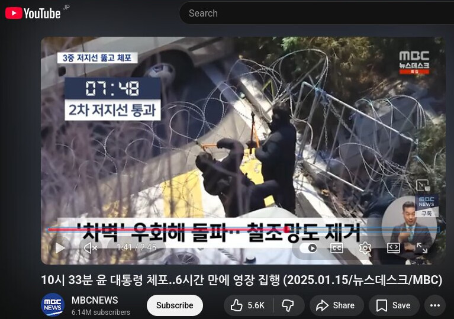
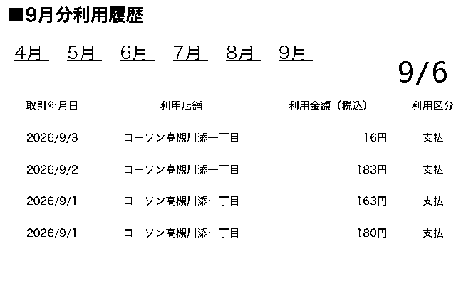

下記は金建希の現在4つある事件の早見表です。各数字は各段階(1〜3審)での判決が懲役何年だったかを示しています。判決がまだ出ていないものについては「？」としています。各数字ないし記号をクリックすると関連する記事が表示されますが、日本語の記事が無いものについては英語の記事を代用しています。
| 1審 | 2審 | 3審 |
|---|---|---|
| 1 ⅔ | 4 | ? |
| 7 | ? (Sept. 22) | |
| ? | ||
| ? |

26. 9. 13
下記の今週の裁判スケジュールには「김건희」(金建希)の公判が一つもありませんが、これは記事の誤りか、あるいは先週매관매직事件(2審)が結審まで終わり、22日の宣告公判を待つのみの状態となっているからだと思われます。下記はいずれも尹前大統領の公判ですが、16日(水)の偽証容疑の宣告公判については無罪か軽い罪となる可能性が高いです。(1審の判決を確認して下さい) 以前にも書いたように尹前大統領の複数の刑事事件のうち偽証についてのものが無罪となったからといって、例えば内乱首謀の最新の判決である無期懲役には影響しません。このようなことを事前に書いていても、今週の判決の翌日にはこの地域でオートバイが早朝から騒音を発したり、コンビニの前で若者らが酒を飲みながら寝そべったり、老人までが私に暴力を振るおうとする事態がかなり高い確率で発生することでしょう。この偽証事件の2審(항소심)宣告公判が金建希の매관매직事件の2審宣告公判の直前に配置されていることは何か意味のあることだと私は思います。金建希の매관매직事件2審宣告(22日)時には恐らく1審と同様、有罪判決が下されるでしょうから、この地域に住んでいる方々は落胆したり、憤慨されたりされるはずです。ただ直前に「尹前大統領、無罪!」というニュースが出ることにより(日本のSNS等には100%このような事実を完全に伝えないニュースが流れるはずです)そういったことが緩和されるだけでなく「あいつは無実の我らが同胞・尹前大統領を非難しただけでなく、その夫人まで侮辱しているけしからん奴だ」という合意が生まれ私が皆様から犯罪に近いか犯罪そのものの被害を被る事態が起こりうるのです。はっきりとは覚えていませんが、尹前大統領の偽証事件1審宣告直後にも金建希の何らかの宣告公判があったかも知れません。たしか当時も似たような状態にこの街が陥っていたかと思います。
14일(월) 서울고법, ‘내란우두머리 등 혐의’ 등 윤석열 전 대통령 외 7명 항소심 16차 공판(오후 2시)
16일(수) 서울고법, ‘위증 혐의’ 윤석열 전 대통령 항소심 선고(오전 10시 30분)
서울중앙지법, ‘직권남용권리행사방해 등 혐의’ 윤석열 전 대통령 외 1명 1차 공판준비기일(오후 2시)
17일(목) 서울고법, ‘내란우두머리 등 혐의’ 등 윤석열 전 대통령 외 7명 항소심 17차 공판(오전 10시)
18일(금) 서울고법, ‘일반이적 등 혐의’ 등 윤석열 전 대통령 외 3명 항소심 7차 공판(오전 10시)
서울고법, ‘일반이적 등 혐의’ 등 윤석열 전 대통령 외 3명 항소심 8차 공판(오후 2시)
(이번주 법조 일정) 9월 14일~9월 19일
https://www.lawtimes.co.kr/news/articleView.html?idxno=226257
今日手紙に書いた、ホルムズ派兵に関連することは恐らくアメリカのNSSとも関係があると思います。下記記事は内容は確認していませんが、これについてのものだと思います。今日もWifiスポットに行くかも知れませんが、午前10時に近所の図書館が開きますので先にそちらに行きます。
https://jbpress.ismedia.jp/articles/-/92913
https://news.yahoo.co.jp/expert/articles/10cdd8d47ec88e84cbddc6c084bba5fe1bfaef9c
手紙に書いた「韓国は剣である」という言葉については下記記事に書かれてあります。
US Forces Korea Commander Gen. Xavier Brunson has said that South Korea is a "dagger in the heart of Asia" if seen from China's east coast, a remark that apparently underscored the strategic location of the Asian ally amid an intensifying Sino-U.S. rivalry.
(5. 27) USFK commander says S. Korea is 'dagger' in heart of Asia from China's perspective
https://m.koreaherald.com/article/10756617
以前述べたように私が鶏肉ばかり買うようになったのは韓国がホルムズ派兵を検討中であることと関係があります。豚肉をイスラム教徒の方は食べませんし、チキンもこの場合では(戦争に参加しないという)良い暗示となると思われたからです。ただこのことが原因で何か噂が流れた可能性もあるので今日はソーセージでも買おうかと思います。
🧑🍳 오늘의 부엌 영상:
https://drive.google.com/file/d/1jT45okyggSq0XGR0pCKQLrvUWEMYVnGB/view?usp=drivesdk
https://drive.google.com/file/d/11nOSBab7fBoSwrvh-0MjZuf-7BA5Jc3W/view?usp=drivesdk
President Lee reassures public over oil prices amid escalating Middle East tensions
제가 전에 쓴 그로네코 야마토에 관한 글에서 한 일본어 학교에 대한 부분을 삭제한 건 네팔에서 일어난 홍수 때문입니다. (그 센터엔 네팔 분 같은 분도 계셨으니까) 사람들이 소문을 내는 건 그들이 뉴스를 안 보고 너무 무식하기 때문일지도 모르네요. 오늘도 오전 9시경에 마르야스에 가는데요. 어젯밤에 꾼 꿈 때문에 한 가설이 생각났는데 그건 그 센터 내에 있는 사람들이 한 이유로 제가 여전히 그곳에서 일을 하고 있다는 소문을 내고 있다는 가설입니다. 다만 이것도 잘못일 수도 있습니다. PS: 어제 서울에서 호르무즈 파병에 반대하는 집회가 열린 것 같네요. 이 일에 대한 기사는 여러 가지 있었지만 제목이 자극적이기 때문에 이걸 선택했습니다.
“尹도 감히 못 한 해외 파병… 이재명 정부에 깊은 배신감”
https://m.wikitree.co.kr/articles/1159076
26. 9. 12
제가 최근에 베트남에 관한 일을 여러 번 한 식으로 표현한 건 호르무즈 파병에 반대하시는 분들 사이에 한국이 베트남에 하던 파병을 인용하시는 분이 있거나 최근에 미국 해군 장관으로서 지명 받았다는 Hung Cao씨가 베트남인이시기 때문입니다. 만약 대한민국이 호르무즈 해협에 파병할 경우 그분에 대한 일이 더 한국 내 뉴스 기사 등에 등장할지도 모르는데요. 그러나 저의 개인 정보를 수집하는 바보와 같은 일본 사람들은 다른 해석을 했을 것입니다. 그리고 도서관에 관한 일 때문에 그로네코 야마토의 쓰레기 등이 다시 거짓말을 했을 수도 있는데요. 이런 죽음을 두려워하지 않는 일본 사람들을 우선 호르무즈 해협에 보내면 되는데요.
私が写真や動画のアップロードに使用しているのはDocuments (by Readdle)というアプリの、かなり以前にダウンロードしたバージョンです。これのネットワーク機能を介してGoogle Driveにアクセスしていますが、これを使うと何故か大きなファイルであっても辛抱強く待てばアップロード出来ることが多いのです。
(外出中) またホルムズ派兵を最終的に決定するのは国会だと思いますが、国会は国民の代表であるはずなので昨日手紙に書いたのはそのことです。
恐らく私が自殺するなどといった噂を流している方は李在明大統領についてよく理解しておらず、李在明大統領はアメリカに言われて泣く泣くホルムズ派兵を検討しているのだと思われているのだと思います。私は李在明大統領はむしろ乗り気で、ホルムズ派兵を契機に自身の政策にとって有利となる何かを引き出せると考えておられるだろうと思っています。
(Doutor Free Wifi에서) 李在明大統領がホルムズ派兵を代償に引き出しうるものとして、まず北朝鮮問題の解決が挙げられるかと思います。この方は以前から南北韓関係にとってトランプ大統領が「ピースメーカー」であり、自身が単なる「ペースメーカー」だと述べられてきました。
(9. 7) Lee reaffirms commitment to 'pacemaker' role to promote N. Korea-US dialogue
https://m.koreaherald.com/article/10864594
李在明大統領が本当にホルムズ派兵の対価として北朝鮮との対話を引き出そうとされているのかは分かりませんが、この問題について理解するのに役立ちそうな記事を見つけましたのでとりあえず全文をコピーします。(無料で読める記事数が制限されているからです)
https://drive.google.com/file/d/1yY0LOlueh845NsVD0qWeYI0CqtEKbRPs/view?usp=drivesdk
What Role Does Denuclearization Have in North Korea-US Dialogue Today?
李在明大統領が(以前は拒絶していた)ホルムズ派兵に乗り出すことにされた経緯についての公式な情報は見つかりませんでした。皆様も探してみて下さい。フリーダム・シールド縮小について触れている記事もありましたが、アメリカの主張によればこの演習が「費用がかかり、北朝鮮に敵対的なシグナルを送りうる」ため縮小されたのですし、また公式には認められていない武器不足の問題もあったかと思います。いずれにせよ直接の因果関係を示す情報は見当たりません。
下記はMASGA(Make American Shipbuilding Great Again)によるアメリカと韓国の連携についての最近の記事です。これが関係あるかは分かりませんが一応記録しておきます。
Acting US Secretary of the Navy Hung Cao visited Hanwha Philly Shipyard in Philadelphia as South Korea and the United States move forward with a $150 billion shipbuilding cooperation initiative, Hanwha said Wednesday. The visit comes as the two countries pursue the Make American Shipbuilding Great Again initiative, known as MASGA, under their broader strategic investment framework. Hanwha Ocean is among the Korean shipbuilders expected to participate. (中略) “America’s maritime strength depends on our ability to build ships at the speed and scale our nation requires,” Cao was quoted as saying by Hanwha Defense USA. Cao has served as acting Navy secretary since April 22, according to the US Navy. President Donald Trump announced Sept. 1 that he planned to nominate Cao for the permanent post.
(9. 10) US Navy chief visits Hanwha Philly Shipyard amid $150b shipbuilding push
https://m.koreaherald.com/article/10869373
下記は「アメリカ側から明白な要請があった訳ではないが、SNSの投稿等を深読みすることによりそのような要請が実在のものとして扱われる」一例かと思いますが、これも一応記録しておきます。
South Korea is facing growing calls from the United States to send its homegrown Patriot equivalent to Ukraine. While U.S. President Donald Trump said nothing himself, he did post the headline and link of a Washington Post column titled "How Trump can help Ukraine make its own Patriot missiles" to his social media account on Sept. 4. Two weeks earlier, former U.S. Vice President Mike Pence had been more direct. Speaking to CNN from Kyiv, where he had met Ukrainian President Volodymyr Zelensky, Pence said South Korean interceptors should reach Ukraine by way of the United States, framing it as a chance for President Lee Jae Myung to step forward. (中略) The U.S. push is a supply problem before it is a diplomatic one. Lockheed Martin’s PAC-3 line cannot keep pace with what the wars in Ukraine and Iran have consumed, and a new Patriot order takes four to six years to arrive. The Cheongung-II, developed by the Agency for Defense Development with LIG D&A, Hanwha Systems and Hanwha Aerospace and marketed at home as the Korean Patriot, is the readiest substitute anyone has identified. It engages aircraft and ballistic missiles at ranges up to roughly 50 kilometers (31 miles), and each interceptor costs about $1.1 million against $3.7 million for a PAC-3, according to the Financial Times. Roughly a third of the price, rolling off a line that is still expanding. The Washington Post column was written by Marc Thiessen, a fellow at the American Enterprise Institute and a former speechwriter for President George W. Bush. Licensed Patriot production inside Ukraine would take years, he argued, while the interceptor shortage is immediate and South Korea has a system that could fill the gap now.
(9. 11) What is behind the U.S. push for South Korea to send missile interceptors to Ukraine?
これもハンファが関連するので記録しておきます。
(9. 10) Korean arms makers expand into NATO’s east flank, $477M rocket launcher deal signed with Croatia
ここにもあるようにホルムズ派兵の打診は以前から続いていたものであり、これまでは拒否していたようです。
(8. 17) Trump says US to reduce military drills with South Korea after it stayed out of Iran war
https://www.bbc.com/news/articles/cx2lll7zvn0o
下記は無料アカウントを作ると読めますが、いずれにせよ韓国の方々が選択することですし、イギリスやフランスが派兵していることからして私についての噂が関係しているとは思えません。今日は若い韓国の方と思われる方々を何度か見かけましたが、皆様にお伝えしたいのはトランプ政権は以前からあらゆる地域で弱い者いじめをして来ており、今回偶々韓国が槍玉に挙げられただけだという事です。
Today, any Korean mission to Hormuz would likely be designated as a “noncombat” deployment. But as the Iran war has shown, in a conflict fought with missiles and drones, soldiers in support positions can and will be targeted. Korean Marines may not be invading Kharg Island, but they will still be deployed in a combat zone where U.S. air defense stockpiles are running low. Even with the safeguards of a noncombat designation or international support, Korean sailors’ lives would be at risk. For Korean conservatives who support the mission, if not the Iran war itself, the hope is that sending warships will appease Trump and prevent him from withdrawing military assets from the Korean Peninsula. An opinion columnist for the conservative Chosun Ilbo newspaper, for example, wrote that supporting the United States might be a matter of survival in a fragile international environment on the cusp of a “third world war” (even as he went on to criticize “Trump’s greed” and “imperialistic territorial expansion”). Deployment might also appeal to members of Korea’s business community. Korean companies have made significant investments in U.S. markets in recent years, and some businesspeople may believe that appeasing Trump will help preserve their access. But trying to cater to Trump’s whims carries diplomatic risks. The U.S. president has stated his interest in restarting nuclear negotiations with North Korean leader Kim Jong Un, something that he believes will secure his personal legacy. If these negotiations move forward, they will likely require further military concessions to North Korea. This raises the possibility that South Korea might actually be putting its sailors at risk for the sake of a deeply unpopular U.S. war, only to be asked to make further sacrifices to its security at home.
The Political Cost of Sending Korean Forces to Hormuz
https://foreignpolicy.com/2026/09/10/south-korea-trump-iran-hormuz-alliance/
私は図書館のすぐ近所に住んでいますので、読みたい本があればすぐ借りて、皆様にお見せした図書を返却する前に返してしまうという事がよくあります。昨日図書館の前に車を停めていた方にはそれと分かるよう、表紙を見せつけたのですが、気付かなかったようです。(昨日返却したのはフランスについての本でした) 私は私の個人情報を収集しておきながら、いつも的外れな解釈をする愚かな人々に抗議する為にこのような事をしています。現在借りているのは下記の5冊です。明日はこれらをまとめて返すことにします。
https://drive.google.com/file/d/16XAPMhIJzseLfhdVMaB1PpBH3_aY7jrJ/view?usp=drivesdk
PS: 私は低速モード下で効率的にニュース記事を探すために下記のようなことを行っています。まず総合ニュースサイトのようなものは低速モードでは殆ど読み込めませんので、Googleの検索欄に予め決めておいたキーワード(例えば김건희等です)を入力し、わりと新しそうな記事があればその記事名をまず控えておきます。その記事が低速モードでも比較的読み込みやすいサイト(yna.co.kr, news1.kr, newsis.com等)にあるものでしたらそのまま読み込みますが、重くて殆ど読み込めないサイトでしたら控えておいた記事名をそのままGoogleに入力し、DaumかNate뉴스がキャプチャーしていないかをチェックします。これらのサイトがコピーした記事はコピー元のサイトが重たい場合でも読み込める可能性が高いです。Daum等にコピーが無い場合には記事名から内容を推測し記事名とURLのみ利用することもあります。(かなり重いサイトであってもしばらく放置してからブラウザの「ブックマークに追加」を選択すると記事名がコピー可能になります) このような方式ですと何か重要なニュースを取りこぼす可能性が高いので外出した際にWifiで総合ニュースサイトを見たり、新聞を読んだりすることもあります。あと何故か外国の総合ニュースサイトの中には低速モードであっても読み込めるものがあります。(bbc.com, theguardian.com, trumpstruth.org 等)
下記の「きょうのニュース」内にもこの조(曺)희대大法院長のスピーチについての記述があります。
◇最高裁長官 司法は「他の国家機関の干渉受けない」
曺熙大（チョ・ヒデ）大法院長（最高裁長官）は、ソウル市内で開かれた「韓国法院（裁判所）の日」の記念式典であいさつし、「憲法上独立した国家機関である裁判所（司法）は、他の国家機関や政治権力、社会勢力はもちろん訴訟当事者からも不当な干渉や影響を受けず、ただ憲法と法律のみに従って中立的で公正に裁判を行ってこそ国民の自由と権利を完全に保障し、法治主義を実現することができる」と強調した。曺氏は慣例を破って大法官（最高裁判事）候補を書面で推薦し、再推薦を求めた青瓦台（大統領府）と対立している。これに対し、大法院は近く立場を明らかにする見通しだ。
韓国 きょうのニュース（9月11日）
https://news.yahoo.co.jp/articles/ae0ac64cb31e9b72be6d6c23e09112ca74bc37f7
これが噂の原因である可能性もあるので今日はWifiが使える場所に行って법원의날について説明している記事を探してみます。夕方にはホームページを更新出来ればと思います。
今日明日は土日であり、韓国の裁判所も休みますので조(曺)희대大法院長についてのニュースも出てこないと思います。下記は昨日の記念式で조(曺)희대大法院長が行ったスピーチについての記事です。これについて何か誤解が生じている可能性もあるのでより多くの方が読めるようにと英訳された版を紹介します。(韓国の「裁判所の日」は9. 13ですが、今年はこの日が日曜日なので記念式をその直近の平日である9. 11(金)に開いたというのが事実らしいです)
"No Undue Interference from Political Power... Chief Justice Speaks Out on Blue House Conflict for the First Time
https://mnews.sbs.co.kr/english/article.do?newsId=N1008748901
🧑🍳 오늘의 부엌 영상:
https://drive.google.com/file/d/1KSO_vyU4_56Zaov1H3QzR2yoJ6Km7Yy5/view?usp=drivesdk
https://drive.google.com/file/d/1hoULRMIdvB-oWYJ7pX-K3AzJXppaynio/view?usp=drivesdk
ウクライナ紛争以来、プーチン大統領がBRICS首脳会議に直接出席するのは今回が初めてだ。
어젠 왠지 당신이 걱정하고 기뻐하고 하시는 느낌이 들었습니다. 왜 제가 어제까지 김건희의 한자 이름을 잘못 기억하고 있었는지 잘 모르지만 마치 저주가 해소된 것 같은 기분예요. 오늘도 오전 9시경에 마르야스에 갑니다.
26. 9. 11
지금 미국 행정부가 대한민국에 호르무즈 해협에 파병하라고 하고 있다면 아마 오는 미국 중간 선거와 무관하지 않을 것입니다. 미국 국내에선 이란 전쟁에서 미군 병사들이 작고하거나 항공 모함 상의 상황이 너무 나쁘기 때문에 이란 전쟁에 반대하시는 분이 많다는데요. 만약 한국이나 일본이 가입하면 미군 병사들이 작고하시는 것이나 항공 모함 상의 상황이 더 이상 악화되는 걸 방지할 수 있을 것이니까 아마 그 때문입니다. 하지만 제가 미국인였다면 그런 일이 없다고 해도 중간 선거에서 공화당을 위해 투표할 것인데요. 왜냐하면 제가 오늘 읽은 신문 기사에 의하면, 만약 공화당이 승리하면 온 미국 성인이 70만 엔 정도의 보너스를 받을 수 있다고 트럼프 대통령이 말하셨기 때문입니다. 역시 미국은 온 세계에 있어서 가장 hot한 국가이군요! 다만 제가 사랑하는 분은 민주입니다.
金建希(私はずっと「金健希」だと思っていましたが、金建希が正しいようです)の事件が大法院の全員合議体に回付されたことについては下記記事にある通りです。この記事は今月初めに出たものですが、この時点でもまだ判決が出ていないことがお分かりになるかと思います。
大法院は7月23日、キム・ゴンヒ氏の資本市場法違反事件を全員合議体に付託するため、予定されていた判決期日を再び延期した。当初の事件は大法院2部が審理して7月24日に判決する予定だったが、判決の1日前に全合付託が決定された。大法院が判決直前に事件を全合に移した以上、法理と事実関係についての追加的な検討が必要だと判断したものと解釈される。
(9. 2) 「全員合議体」に移行した金建希事件…大法院が解決すべき法的争点
https://news.jkn.co.kr/post/972796
下記に今日の記念式で조(曺)희대大法院長が述べたという言葉が書かれてありますが、これによると大法院が政府(青瓦台)の言うことを聞いて大法官の欠員を埋め、全員合議体にて金建希に対して判決を下すことは当分なさそうです。
조희대 대법원장은 11일 "헌법상 독립적인 국가기관인 법원이 다른 국가기관과 정치 권력, 사회 세력으로부터 부당한 압력이나 영향을 받지 않아야 한다"고 밝혔다. 조 대법원장은 이날 서울 서초구 대법원 2층 중앙홀에서 열린 제12회 대한민국 법원의 날 기념식에서 "오직 헌법과 법률에 따라 중립적이고 공정하게 재판할 때 국민의 자유와 권리를 온전히 보호하고 정의를 실현할 수 있다"며 이같이 말했다.
[속보] 조희대 대법원장 "법원, 정치 권력·사회 세력으로부터 부당한 압력이나 영향 받지 않아야"
https://m.newspim.com/news/view/20260911000634
下記に日本の皆様が誤解しやすいポイントについて述べてみますが、まず一昨日開かれたのは金建希のある(韓国では一般に「매관매직事件」と呼ばれている)事件の結審公判です。結審というのは日本でも同様だと思いますが、判決の前段階となるものでここで検察が求刑を行います。今回の求刑量は懲役7年でしたが、これは同事件の1審判決(懲役7年)と同じ数字ですので、子供達がこれらを混同した可能性はあります。今後ニュース記事をご覧になる際には記事が発行された年月日をチェックして下さい。それから金建希の複数の刑事事件のうち最も早く大法院(最高裁判所)まで進んだ事件と、一昨日2審結審公判が開かれたいわゆる매관매직事件はいずれも日本の報道では同じ「あっせん収賄」事件だと説明される事が多いのです。これが原因でさらに複雑な混同が生じたかも知れませんね。ただ日本の報道社の中にも前者を「統一教会側から金品を受け取ったり、株価操作をしたり、政治ブローカーから無償で世論調査結果を受け取ったりした事件」、後者を「企業関係者などから金品を受け取って便宜を図った事件」といった風に容疑の内容を詳しく説明しているものもあります。あと22日の매관매직事件の宣告公判についてはこれまでの経緯から、韓国の放送社が裁判の様子を中継したり、映像がYouTube等に公開される可能性はあると思います。
Googleで検索してみたところ、一昨日の懲役7年求刑についての日本語の記事はヒットしないようです。なので「金建希 7年」等のキーワードで検索をした方は過去の매관매직事件の1審判決についての記事をご覧になることになりますが、ここで記事が発行された年月日をチェックしない方々は誤解をしたはずです。韓国語の記事ないしその韓国語の記事のAIによる英訳を通して日本の方々が一昨日金建希の매관매직事件の2審結審公判が開かれ、そこで検察が懲役7年を求刑した事実を確認することは可能です。
(26. 9. 9) “남편이 대통령 돼 다 잃었다”…‘매관매직’ 혐의 김건희, 항소심서 무죄 주장
https://biz.chosun.com/topics/topics_social/2026/09/09/5QVEKAQUMNGF7EU2FIH6LTCG3M/
また韓国の刑事裁判が3審制であることや、その各段階の呼称についてあまり理解されていないかも知れません。このような事が原因で、私が以前から「大法院が金建希への宣告を保留している」と述べていたにも関わらず、最近皆様が何らかの宣告と思われた事象が起きたことから、これが私が述べていた「大法院判決」なのではないかと誤解された方もおられたかも知れません。下記に3審制の各段階についての名称を日本語と英語で示し、更に各段階で一般的に利用される法院(裁判所)の名称も記します。皆様が各ニュース記事をご覧になる際にはこれらの単語を必ず確認するようにして下さい。
| 韓国語 | 英語 | 日本語 |
|---|---|---|
| 1심 | court of first instance | 1審 |
| 2심 (항소심) | appeal court | 2審 (控訴審) |
| 3심 (상고심) | supreme court | 3審 上告審 |
| # | 韓国語 | 日本語 |
|---|---|---|
| 1審 | 서울중앙지방법원(서울중앙지법) | ソウル中央地方法院, ソウル中央地方裁判所(ソウル中央地裁) |
| 2審 | 서울고등법원(서울고법) | ソウル高等法院, ソウル高等裁判所(ソウル高裁) |
| 3審 | 대법원(대법) | 大法院, 最高裁判所(最高裁) |
先に金建希が拘置所から釈放される可能性があると述べましたが、一昨日2審結審公判が開かれた매관매직(賣官賣職)事件の2審宣告公判は下記記事によれば今月22日に開かれます。これは皆様で調べていただきたいのですが、特別検察法(内乱・金建希)には「6·3·3規定」というものがあり、3審判決(最高裁判決)は2審判決より3ヶ月以内に下さなくてはならないことになっています。(Google等に「특검법 6·3·3 규정」と入力してみて下さい) これに従えば金建希の매관매직(賣官賣職)事件について大法院は今年の終わりには判決を下す必要があるということになります。もしそうなれば金建希釈放は回避されるかも知れません。ただ大法院が매관매직(賣官賣職)事件についても全員合議体に回付する場合にはこの通りとはならず、金建希の複数の刑事事件のうち2件が조(曺)희대大法院長の定年まで保留されることとなります。
서울고법 형사15-3부는 오늘 김 씨의 '매관매직' 재판 첫 준비기일을 열고 "특별한 사정이 없으면 9월 22일 오후 2시에 판결을 선고하겠다"고 밝혔습니다.
(7. 29) '매관매직' 김건희 항소심 9월 선고‥1심 징역 7년
https://imnews.imbc.com/news/2026/society/article/6840993_36918.html
昨日も述べたように今日は「裁判所の日」(법원의 날)の記念行事が開かれ、조(曺)희대大法院長がそこで「立場の発表」をするか注目されるとのことですが、あまり期待出来ないようにも思います。「立場の発表」と書くと大袈裟なことのようにも思えますが、これは大法院長が本来やらなくてはいけない事なのです。
‘법원의 날’ 조희대, 대법관 재제청 입 열까…기념사 이목
https://www.edaily.co.kr/News/Read?newsId=02122166645579136&mediaCodeNo=257
조(曺)희대大法院長が現時点でまだ「立場の発表」をしていないのは確かなことのようですが、李在明大統領もこの件について直接言及されていないようです。(이재명 대통령 역시 대법관 임명 문제를 직접 언급하지 않고 있다) 大法官が2名欠員するという事態は未曾有の事態だそうですが、조(曺)희대大法院長のような人物が登場することを大韓民国の憲法は想定していなかったのかも知れません。法的な拘束力が無いことを理由に조(曺)희대大法院長がこのまま欠員を放置し、全員合議体の審理を実施できないとなると、조(曺)희대大法院長が70歳で定年を迎える確か来年の6月まで金建希の事件について最高裁判決を下せないということになります。そうすると10月釈放がなんとか回避できたとしても金建希が今後拘置所から出てきてしまう事態になりかねません。
조희대 대법원장의 침묵이 길어지고 있다. 노태악 대법관이 퇴임한 3월3일 이후 대법관 공백이 190일(9월9일 기준)을 넘어섰고, 9월7일 이흥구 대법관마저 퇴임하면서 2명 공백 사태가 현실화됐다. 그럼에도 여전히 조 대법원장은 청와대의 '대법관 재제청 요구'에 답을 내놓지 못하는 중이다. 이재명 대통령 역시 대법관 임명 문제를 직접 언급하지 않고 있다. 행정부와 사법부, 두 헌법기관 수장이 침묵하는 동안 국회는 조 대법원장과 사법부를 향한 공세의 고삐를 죄고 있다. 대통령 임명권과 대법원장 제청권이 충돌하는 초유의 사태 속에서 법조계와 헌법학자들은 '헌법 정신'을 훼손하지 않으면서도 공백 사태를 조속히 매듭지어야 한다고 제언한다.
靑 ‘재제청 요구’에 꼬인 대법관 인선…190일째 공전하는 대법원
https://v.daum.net/v/20260911064151559
🧑🍳 오늘의 부엌 영상:
https://drive.google.com/file/d/18mkIYJUEAS7YXGsiIuVPaNwxnTIQridP/view?usp=drivesdk
https://drive.google.com/file/d/1e9f-rm2kip1jVDpQBguZjiT3nymaJzkg/view?usp=drivesdk
イーロン・マスクは、4時間も画面上で詮索されたことに激怒した。
https://www.vietnam.vn/ja/elon-musk-noi-gian-vi-bi-soi-suot-4-gio-tren-man-anh
저는 역시 한국이 호르무즈 해협에 파병할 가능성이 있다고 보고 있지만 정부가 그런 결정을 할 때 제가 자살할 것이라는 소문이 났는지도 모릅니다. 제가 호르무즈 해협에 대해 말하기 시작하자 일본 사람들이 저에게 더 심한 해를 주기 시작했으니 앞으로 이 일에 대해서도 말하지 않겠습니다. 오늘도 오전 9시 경에 마르야스에 가요.
(9. 10) 今日イオンモールであるショート動画( https://m.youtube.com/watch?v=2S58-YNgpwQ )を撮影しましたが、これは「イランの方が私にホルムズ派兵についてもっと辛辣な事を書けと言い私はそうするが、韓国の方は辛いものに動じないのでイランの方が怒っている」という物語です。テスラはイーロン・マスクにちなんだものですが、何か意味がある訳ではありません。私は今流れているであろう噂に対抗する為、ユーモアのようなものを表現する精神的余裕があると示す為これらをしました。
26. 9. 10
오늘 외출을 통해 제가 안 건 생각보다 많은 사람들이 저의 부모가 냈을 수 있는 소문에 대해 알고 있고 왠지 저를 보고 낙심하고 있었을 것 같다는 점입니다. 만약 세상 사람들이 저의 부모에 대한 한 사실을 알고 있다면 제가 이 약 오 년 동안에 난 소문을 다 제거할 가망이 있단 말인데요. 잘은 모르지만 저는 불가능한 게임이라고 생각하던 게임을 한 바보 덕분에 해결할 수 있을지도 모릅니다. 그렇다면 제가 163번째가 되진 않을 것이지만 저는 저의 부모를 우리와 같은 인간이라고 생각할 수가 없습니다. 그런데 오늘 제가 낸 일 때문에 오해를 했을 사람이 있었을 것이니까 내일은 가능한 한 영어 기사를 인용하지 않고 한국 요리를 잘 할 수 있을 경우에만 식사 영상을 내기로 합니다.
9. 10 이온몰 방문
https://drive.google.com/file/d/1Uhr9Kr87KxSggeVYT37mmrcWcCLPHcRl/view?usp=drivesdk
(이온몰에서) 조(曺)희대大法院長については下記記事に「明日裁判所の日(법원의 날)記念式にて関連メッセージが出されるか注目される」(청와대의 대법관 재제청 요구에 대해 법원행정처가 검토를 이어가는 중 관련 메시지가 있을지도 주목된다)とあるので今日はまだのようです。
대법원은 오는 11일 오전 11시 서울 서초구 대법원 2층 중앙홀에서 제12회 대한민국 법원의 날 기념식을 개최한다고 10일 밝혔다. (中略) 청와대의 대법관 재제청 요구에 대해 법원행정처가 검토를 이어가는 중 관련 메시지가 있을지도 주목된다. 대법원은 기념식에서 법원 발전과 법률문화 향상에 기여한 법원 구성원 등에게 대법원장 표창을 수여한다. 지난 5월 서울법원종합청사에서 숨진 채 발견된 고(故) 신종오 전 서울고법 고법판사에게도 표창이 주어진다. 그는 김건희 여사의 자본시장법 위반 등 혐의 항소심 재판장을 맡았고, 선고 일주일 뒤 청사 내에서 숨진 채 발견됐다. 이후 서울고법은 법관 업무 경감을 위한 태스크포스(TF)를 구성하는 등 판사들의 부담 경감에 나섰다.
내일 법원의 날…조희대 '대법관 제청 갈등' 메시지 낼까 주목
https://mobile.newsis.com/view/NISX20260910_0003783870
下記は昨日開かれた金建希の매관매직事件の2審結審公判についてのニュース映像ですが、公判の部分は1審宣告公判のを再利用しています。
https://www.youtube.com/live/lWy-RJ4ZIH0
下記の映像と比較してみて下さい(1:38:22付近):
(2026/6/26) 賣官賣職事件 1審 宣告公判
https://youtu.be/HLbxzSJ6gNY?t=5900
https://youtube.com/shorts/GYMaM3t99Eg
昨日の結審公判はソウル高裁で開かれたので映像が公開された場合は下記に出てくるはずです。
http://www.youtube.com/@%EC%84%9C%EC%9A%B8%EA%B3%A0%EB%B2%95
下記は別の裁判(建前上「現在大法院が審理中」となっているもの)の映像ですが、ソウル高裁も金建希の映像を公開する場合には公開します。
(2026/4/30) 株価操作等事件 2審 宣告公判 (33分あたりでズームアップされます)
호르무즈 파병에 국민 45% “반대”…찬성은 36% 그쳐
https://www.donga.com/news/Politics/article/all/20260910/134641804/1
'호르무즈 파병여건 파악' 현지조사단 귀국…NSC에 결과보고할듯
https://www.yna.co.kr/view/AKR20260910067800504
https://youtube.com/shorts/bPO2lOHDuGo
下記は조(曺)희대大法院長の今日の出勤時の様子です。
출근하는 조희대 대법원장
https://www.news1.kr/photos/8098507
下記は非常戒厳の前に描かれた肖像画ですが、私の言いたいことは分かると思います。
Forced cancellation of satirical works exhibition sparks debate on freedom of expression
どうも昨日の晩から迫害が強まったのは金建希のことが関係しているような気がするので後でWifiが使える所に行って調べてみます。
下記の記事によると昨日金建希の매관매직事件の結審公判が開かれたそうですが、それについての報道が見つからないので恐らく(매관매직事件の)1審結審公判と同様、中継はなされなかったのだと思います。ところでこの陳述はかなり変です。というのは金建希が大統領夫人になる以前に犯したドイツ・モータース株価操作の罪に対する追及を止めさせる為に全てを使い込んだのは尹前大統領だからです。(尹前大統領が非常戒厳を宣布したのはその為だと言う人もいます) また金建希はかなり財産を持っています。
Kim Keon Hee says she 'lost everything' after husband became president
https://m.koreaherald.com/article/10868490
私が昨日の結審公判に気付かなかったのは以前参照した週間スケジュールにその記載が無かったからです。
(이번주 법조 일정) 9월 7일~9월 11일
https://www.lawtimes.co.kr/news/articleView.html?idxno=225929
以前金建希の法廷での傲慢な態度について話題になっていましたが(下記記事を参照して下さい) 今回このように態度が変わったのはやはり以前まで流れていた「金建希10月釈放説」が覆されつつあり、法廷での態度に気をつけねばならないと思い始めたからだと思います。
[자주시보] 김건희 태도 돌변 배경에 조희대가 있다?
아마 이재명 대통령이 프랑스에서 귀국하시면 호르무즈 파병에 대한 입장도 내실 것이니까 저는 정부가 이 일에 대해 결정할 때까지 돼지고기를 안 먹기로 합니다. (어젠 그 마트에 있는 닭고기가 다 같은 지역에서 온 일였기 때문에 물고기 소시지를 샀는데요) 다만 트럼프 대통령이 '이란 전쟁은 마국 중간 선거 후 곧 끝난다'고 하셨다니까 역시 파병이 필요할 이유는 없게 보이는데요.
🧑🍳 오늘의 부엌 영상: (韓国語が読めない、ニュースに疎い方々によって私が既にホームレスであるとの噂が流されたかも知れませんので、今日から日本語の記事を使います)
https://drive.google.com/file/d/1-t2oS8Z0aBjUQTxpMTWJvCwJc98d2h5U/view?usp=drivesdk
https://drive.google.com/file/d/1WGtQC1xw0hjrnc-aD7kDwbrbWnpPBnl3/view?usp=drivesdk
トランプ氏、イラン戦争は中間選挙後「すぐに終結する」
https://www.jiji.com/sp/article?k=WP-WSJ-0003879372&g=ws
もう隠す必要もないと思うので書きますが、冷蔵庫内にあるパスタは無くなり次第同じものを買うといった方式で常に更新されています。私はこういったことをクロネコヤマトの例の契約社員が何か虚言を吐いて自滅することを期待して行っていましたが、別のもの(両親)も網にかかったのかも知れません。これをどう処分するかまだ考えていますが、本当にたちの悪い人達ですのでこの方々が撒いた噂は無視して頂きたいのです。(昨日来た葉書も読まずに排水溝に入れてありますが、近所の義母と同じ年齢層の方々の様子から世間で共有されているのはその内容なのではないかとも思われます)
昨日出た조(曺)희대大法院長についての記事は私が知る限り下記と同様のものだけです。下記の通りこれは間接的に조(曺)희대大法院長の動向を伝えるものですが、これによればまだ時間がかかりそうです。
법원행정처장, 대법관 재제청에 "조희대 원장이 숙고 중"(종합)
https://www.yna.co.kr/view/AKR20260909137251004
26. 9. 9
☔ 9. 9. 교토 방문 ☔
https://drive.google.com/file/d/1ZdLp_iDJ_RhuKri1SsD2wBdWAbvAlQda/view?usp=drivesdk
오늘은 웃고 있는 윤석열의 비전이 좀 약하게 되었습니다. 그런데 이재명 대통령 부부는 프랑스에서 열린 저녁회에서 Grand Cross라는 일을 선물 받았답니다. 역시 프랑스는 궁해서 뭔가를 한국에 기대하면서 이런 가운데에 이재명 대통령 부부를 초대했는지도 모릅니다. 다만 저는 이 일에 대해선 더 이상 말하지 않겠습니다. 앞으로 한국에 속한 화물선 등이 공격 당할 때가 많을 수도 있고 경제적인 제재를 당할 수도 있고, 국내서도 여러 일이 일어날 수도 있을지도 모르는데도 저는 잘 모릅니다. 설마 이 일은 지네 게임 같은 일이고 다음은 대한민국이 일본 다카이치를 초대하고 호르무즈 파병에 대해 함께 이야기할지도 모르네요. 저는 오늘은 피로했으니까 낼 그분이 뭔가 말하신 후 잘 생각해 봅니다.
(外出中) 今日は조(曺)희대大法院長 出勤についての記事が出るのが少し遅かったみたいです。
출근하는 조희대 대법원장
https://mobile.newsis.com/photo/NISI20260909_0021429738
(교토 시청에서) 下記記事にあるように「尹アゲイン」(YOON AGAIN)というワードは尹前大統領の側近であった김용현(金龍顯)前国防部長官が獄中で記した書簡に登場し、以降尹前大統領の支持者らの間で拡散したものです。このように「尹アゲイン」は尹前大統領の身内が考案したキャッチコピーですから、あたかも尹前大統領自身が「尹アゲイン!」と叫んでいるようなおかしな事なのです。また「尹アゲイン」が尹前大統領の再選を意味するのだとしたら、法的に不可能なことでもあります。この記事はまず헌법재판소법 54조(憲法裁判所法 第54条)の「弾劾により罷免された者は5年間公務員になることが出来ない」という条文に触れていますが、5年が経過したとしても韓国は(憲法の規定により)大統領の중임제(重任制)ではなく単任制(단임제)を採用しているので改憲がない限り再選は難しいと述べています。(설령 5년이 지나더라도 우리나라는 현행 헌법상 대통령 중임제가 아닌 단임제이기 때문에 개헌이 되지 않는 이상 차기 대선 출마 역시 어렵다는 게 중론이다)
10일 정치권에 따르면 윤 전 대통령 재출마설은 김용현 전 국방부 장관이 4일 공개한 옥중 서신이 계기가 됐다. 김 전 장관은 "자유대한민국 수호를 위해 더욱 뭉쳐서 끝까지 싸우자. 다시 윤석열! 다시 대통령!"이라며 사실상 재출마를 촉구했다. ‘YOON AGAIN(윤 어게인)’이라는 구호도 김 전 장관의 서신에 등장했다. 이후 탄핵 반대 집회나 보수 성향 커뮤니티에서는 ‘윤 어게인’ 구호가 확산하고 있다. 그러나 뉴스1에 따르면 법조계는 이 같은 출마설은 가능성이 없는 것으로 본다. 헌법재판소법 54조에 따르면 탄핵 결정으로 파면된 사람은 5년 동안 공무원이 될 수 없기 때문이다. 설령 5년이 지나더라도 우리나라는 현행 헌법상 대통령 중임제가 아닌 단임제이기 때문에 개헌이 되지 않는 이상 차기 대선 출마 역시 어렵다는 게 중론이다.
(25. 4. 10) ‘YOON AGAIN?’ 윤석열 재출마 법적으로 가능한지 봤더니
https://www.munhwa.com/article/11497993
ちなみにこの金龍顯は非常戒厳の失敗直後に拘置所のトイレで自殺未遂したことで有名です。世間の皆様は私が自殺するのではないかと期待しているようですが、「尹アゲイン」とは発案者の自殺未遂により飾られた興味深い作品なのです。
金氏は逮捕直前の10日午後11時50分ごろ、拘置所のトイレで、衣類をつなぐひもで自殺を図ろうとしているのを職員が見つけた。法務省幹部が11日、国会で答弁した。保護室に収容され、命に別条はないという。
(24. 12. 11) 韓国戒厳、初の逮捕者は尹錫悦大統領の「先輩」 逮捕直前に自殺を図り…拘置所職員に命を救われていた
https://www.tokyo-np.co.jp/article/373026
(교토 시청에서) 下記は9月1日に開かれた尹前大統領の一般利敵事件の控訴審の公判映像です。この映像にはわりと大きく尹前大統領の姿が写されていますが、居眠りしているように見える場面もあります。
https://youtu.be/OoxLryEGD5w?t=1320
重任と連任の違いについては下記が参考になります。ここでも述べられているように現行の憲法では1回しか大統領になれません。
ここで注意して頂きたいのは大韓民国憲法が現在の形になる以前には重任があり得ただろうということと、弾劾等によって大統領の代理が発生した場合にはその代理の名がWikipedia等の「韓国の歴代大統領のリスト」等に掲載され得るということです。(代理は大統領ではありませんから重任するかも知れません)
조희대大法院長についてのニュースが何故か出てきませんが、これについてはよく分かりません。
手紙に書いたようにこれから外出しますが、これの目的の一つは今週また熟成された私が瀕死状態にあるという噂を覆すことにあります。またWifiが利用できる所があればそこで尹前大統領や조(曺)희대大法院長についての文章を書いてみます。夕方にはホームページにも文章を掲載しますが、それまでは下記のファイルにてお知らせします。(私はいつもこのファイルに携帯電話で書いた文章をパソコンでHTMLに整形してホームページにアップロードしています)
https://drive.google.com/file/d/1x30P2qT6XxLC33Q0764Hg0zCdo4Q21-z/view
下記が今日の조(曺)희대大法院長についての記事かは分かりませんが、日付は今日になっています。
오늘 입장은 어떨지,조희대 대법원장 출근길 현장으로 가보겠습니다.차에서 내린 조희대 대법원장. 청와대 재제청 요구와 관련해서 언제쯤 답변이 나올 것인가라는 취재진의 질문에 아무런 말도 하지 않고 청사 안으로 들어갔습니다. 지금 이흥구 대법관이 그제 임기를 마치고 퇴임하고 그리고 노태악 전 대법관 퇴임 이후에 임명이 안 됐기 때문에 대법관 공석이 2명이 된 게 현실화된 상황인데요. 여기에서 재제청 요구 관련해서 특별한 메시지가 나오지 않고 있습니다. 조희대 대법원장 앞서 부친상 치르고 업무에 복귀하며 재제청 관련에 대해서 논의를 거쳐 공식입장을 밝히겠다고 했는데요. 오늘도 묵묵부답이었습니다.
대법관 2명 공백 현실화…조희대 '재제청' 입장 주목
https://www.ytn.co.kr/replay/view.php?idx=21&key=202609090907012902
尹前大統領のことについては조(曺)희대大法院長の立場の発表とは関係なく日本語で説明してみるつもりです。過去に書いた文章で再利用出来そうなものがあればそれも使ってみます。
(2026年4月 再揭) 今日午後2時に開かれる結審公判は尹前大統領の特殊公務執行妨害等に関する容疑に関するものですので、求刑がなされるにせよ数年の懲役となるはずです。死刑か無期懲役のみが選択可能である内乱首謀者容疑の1審宣告は無期懲役でしたが、今日の2審求刑は特殊公務執行妨害等容疑という、別の容疑に関するものですので今日数年の求刑がなされたからといって以前内乱首謀者容疑に関して宣告された無期懲役が減刑された訳ではないのです。このことを皆様に周知して頂きたいのです。(特に子供たちはこれが理解出来ないだろうと思います)
下記はnamuwiki( https://namu.wiki/w/%EC%9C%A4%EC%84%9D%EC%97%B4/%EC%9E%AC%ED%8C%90 )から引用したものですが、大まかなイメージはつかめると思います:

下記に簡単な和訳を示します。この表にある通り内乱首謀者容疑については未だ2審が始まっていないようです。

この表から容易に推測できるように今後上告審(3審)で内乱首謀者容疑に関して無期懲役ないし死刑が確定する可能性もあります。またそれら重刑が確定しなくとも今日2審の求刑がなされる特殊公務執行妨害等容疑や表のその下にある一般利敵容疑、偽証容疑に関して懲役刑が確定した場合それらを合算した年数は尹前大統領が刑務所に行くことになります。もし皆様がこのようなことを知らずに今日4月6日にすごく楽しいことがあるよ、といった噂を信じて準備されていたなら何らかの存在によって騙されている可能性もあります。(あるいはその何らかの存在は韓国語が操れないバカであり、自らが信じた仮説を皆様にばら撒いたのかも知れません)
またそもそも韓国では現行の憲法下では大統領の再選が不可能ですので仮に尹前大統領が無罪を勝ち取るか懲役を宣告された後でそれを務め終えたとしても大統領として復活することは不可能なのです。(大韓民国憲法第70条) このことは韓国で尹アゲインを叫んでいる方々もよくご存知のことですが、これらの方々の中には尹前大統領を象徴的な存在として看做している方や戦争等の非常事態や改憲を通して本当の尹アゲインを実現しようと考えている方もおられるかと思います。
2. 🐒 でも分かる12.3非常戒厳裁判 (2)
これが噂の原因かも知れませんので今日の尹前大統領の公判についての記事をいくつか紹介しておきます:
- 윤, '체포영장 집행 방해' 항소심 오늘 마무리
- https://imnews.imbc.com/replay/2026/nw930/article/6812890_36996.html
- 오늘 윤석열 ‘체포방해’ 2심 결심 공판···내란전담재판부 ‘1호 사건’
- https://www.khan.co.kr/article/202604060745001/
- 윤, '체포영장 집행 방해' 항소심 오늘 마무리
- https://news.sbs.co.kr/news/endPage.do?news_id=N1008506126
上記(SBS)からの引用です (ここにもあるように公判が始まるのは午後2時です):
윤석열 전 대통령의 체포 방해 혐의 재판 항소심이 오늘(6일) 마무리됩니다. 서울고등법원 형사1부는 오늘 낮 2시 윤석열 전 대통령의 특수 공무 집행 방해 등 혐의에 대한 항소심 결심 공판을 진행합니다. 지난달 4일 항소심의 첫 재판이 열린 뒤 한 달 만입니다. 윤 전 대통령은 지난 1월 1심에서 징역 5년을 선고받았습니다.
下記は今日の公判の傍聴案内です。
- 2026노212(특수공무집행방해 등) 온라인 방청권 추첨 안내[2026.4.6.(월) 14:00 공판기일]
- https://slgodung.scourt.go.kr/dcboard/new/DcNewsViewAction.work?seqnum=19892&gubun=41
日本の方々が未だにこのようなことにとらわれているのは恐らく尹前大統領がこれまでに行ってきたことについてニュースをご覧にならなかったからだと思います。今日2審求刑がある特殊公務執行妨害容疑の対象となる出来事というのは今振り返ってみると悪夢のような出来事でしたし「どうして尹前大統領はあのようなこと(犯罪)をしてまで自らが排除されるまでの時間稼ぎをしようとされたのか」といくら考えてみても私には理解出来ないのです。下記の映像にある通り尹前大統領は当時大統領公邸の前にバスを設置したり、有刺鉄線を張り巡らしたりして懸命に逮捕を免れようとされていました。今考えてみるとこのような試みのせいで余分な容疑をかけられ、刑務所に行かなくてはならない期間が加算されてしまう恐れがあるのですから尹前大統領は本当に馬鹿だなぁと思います。
- 10시 33분 윤 대통령 체포‥6시간 만에 영장 집행 (2025.01.15/뉴스데스크/MBC)
- https://youtu.be/FFB_1gD8W_w


この事件については日本の新聞社も報道していました。皆様がご存知でなかったとしたらそれは皆様自身の問題です。
- 「要塞化」する尹大統領公邸、どうなる拘束？対テロ部隊・ヘリ投入も
- https://www.asahi.com/articles/AST183QYCT18UHBI011M.html
世間の方々を観察していて感じるのは老若男女問わず皆様の政治等に対する考え方は新聞等の報道社が行っている報道とは大きく異なっている可能性があるということです。私がこれまで尹前大統領について述べてきたことは韓国や日本の新聞社の意見と大きくは異なってはいなかったはずですし、その他に関しても同様だと思います。皆様は恐らくSNSを通してこういったことをお知りになるのでしょうが、尹前大統領のことについて言えばこれはとても単純な話ですので根本を正しく理解していればSNSに流れるような噂に翻弄されることは無いはずです。
조(曺)희대大法院長の今日の出勤時の質疑応答についてのニュースはまだ見つかりませんが、皆様も下記を定期的にクリックしてみて下さい。
https://m.news.nate.com/search?q=조희대
https://m.news.nate.com/search?q=%EC%A1%B0%ED%9D%AC%EB%8C%80
富田団地 共益費収支状況等についてのお知らせが来ていました。
https://drive.google.com/file/d/1OSDg7PLjaLlVssJuTc7MiRfEMygFGBn8/view?usp=drivesdk
https://drive.google.com/file/d/1LX4i65mDcfbA7C-Is0RYX7GILl-ZsBaW/view?usp=drivesdk
https://drive.google.com/file/d/1IqVZu0FAW805cvEZk0susYnWU8aiBGV1/view?usp=drivesdk
https://drive.google.com/file/d/1NKrdMjgaeH-XkYppHDYGjwchoC6Uyssu/view?usp=drivesdk
下記は昨日の晩出た記事ですが、「특검은 김씨의 다른 재판에서 새로운 구속영장 발부를 요청하는 방안도 검토중인 것으로 취재됐습니다」とあるようにやはり検察は金建希の別の事件の別の容疑について新たに拘束令状を請求し、拘束期間を延長する手法を検討中だそうです。(利用する容疑は21그램のではなく前からある매관매직事件の容疑となるようです) 裁判所が拘束令状を発付すればとりあえず金建希が10月末に拘置所から釈放されることは不可能になります。
[앵커] 대법원이 오늘 일부 대법관들을 재배치했습니다. 대법관 두자리가 공석인 상태에서 일단 4명이 하는 '소부 심리'는 가능하게 하기 위해섭니다. 문제는 '전원합의체'입니다. 전원합의체에 회부된 김건희씨 구속기한은 오는 10월 31일까지입니다. 그 전에 선고가 안나오면 풀려날 수 있습니다. 조희대 대법원장은 오늘도 입장을 밝히지 않았습니다. 특검은 다른 재판에서 구속영장을 발부를 요청하는 방법도 검토중입니다. (中略)
[기자] 대법원이 오늘 대법관 2명 공백사태에 따라 소부 구성을 재배치 했습니다. (中略) 대법원은 대법관 공백 사태에서 전원합의체 선고를 자제해왔습니다. 전원합의체에 회부된 김건희씨 '3대 의혹' 사건도 47일째 선고기일이 잡히지 않고 있습니다. 문제는 구속기간입니다. 상고심에선 2개월씩 세차례 구속기간을 갱신할 수 있는데, 이미 세차례 갱신을 한 상탭니다. 구속 만료는 10월 31일 밤 12시. 오늘부터 53일 내에 선고가 나오지 않으면 석방될 수 있는 겁니다. 특검은 김씨의 다른 재판에서 새로운 구속영장 발부를 요청하는 방안도 검토중인 것으로 취재됐습니다. 김건희 특검은 "대법원 선고가 10월 31일까지 나오지 않을 것이 확실해질 경우 선고기일 전 매관매직 재판부에 추가 구속영장 발부를 요청할 수 있다"고 설명했습니다. 김씨 매관매직 사건은 오는 22일 항소심 선고가 예정돼 있습니다. 내일 열리는 매관매직 사건 결심재판에서 특검은 구형과 함께 최종변론에 나섭니다.
‘김건희 석방일’ 다가오는데…특검 "전합 선고 안 나오면"
https://v.daum.net/v/20260908195103561
https://news.jtbc.co.kr/article/NB12317375
오늘은 선불카드를 충전하니까 좀 빨리 마르야스에 가 볼 생각입니다.
🧑🍳 오늘의 부엌 영상:
https://drive.google.com/file/d/1ss9Ua1zwc-BvyVHB5wpLt9BDtga5mqDe/view?usp=drivesdk
https://drive.google.com/file/d/1_rlx-QtqIhhkDfKXKmc8siHVZ6LzL5It/view?usp=drivesdk
’트럼프 美지도’에 분노한 아이슬란드…美대사 전격 초치
https://m.yonhapnewstv.co.kr/news/AKR20260908210229A5c
아마 다음과 같은 기사를 소개하는 것이 뭔가를 바꿀 수는 없을 것인데요. 저의 사랑은 물론 한국인이신 당신에 향한 일이고 대한민국에 대한 저의 사랑도 당신에 대한 사랑에 의거한 일입니다. 그래서 만약 대한민국이 바보같은 선택을 하고 윤석열이 웃었다고 해도 당신에 대한 사랑에는 영향이 없을 것입니다. (저는 최근에는 웃고 있는 윤석열의 모습만 생각납니다) 만약 제가 트럼프 대통령 같은 인물에 대해 남보다 잘 이해하고 있었다면 좋은 야쿠자가 될 가망이 있어요. 다만 어제 말한 바와 같이 더 이상 말하지 않겠습니다. ㅎㅎㅎ 오늘도 오전 9시경에 마르야스에 가요.
도널드 트럼프 미국 대통령의 호르무즈 해협 파병 압박이 거세지는 가운데 국방부가 아랍에미리트(UAE)에 현지 조사단을 파견한 것으로 8일 확인됐다. 정부는 "파병을 전제로 한 조사가 아니다"고 선을 그었지만 군 안팎에서는 파병 가능성에 대비한 사전 검토가 본격화한 것이라는 관측이 나온다. 프랑스를 국빈방문 중인 이재명 대통령은 이날 에마뉘엘 마크롱 프랑스 대통령과 호르무즈 해협 자유 통항을 위한 '군사적 기여' 방안을 논의했다. 청와대 내부에서도 파병을 둘러싼 찬반 의견이 공개적으로 표출되면서 이 대통령 귀국 후 관련 논의가 본격화할 전망이다. 이날 국방부는 "호르무즈 상황 파악을 위해 현지에 조사단을 파견했다"면서도 "조사단은 해당 지역 정세 및 안전 상황 등을 파악하기 위한 것이며, 이번 조사가 실제 파병을 전제로 한 것은 아니다"고 밝혔다. 이어 "미국이 우리 자산의 호르무즈 해협 파견에 대해 시한을 정해 요청했다는 것은 사실이 아니다"고 강조했다. 일부 매체가 '미국이 11월까지 파병을 마무리해 달라'는 취지의 요청을 했다고 보도한 부분을 반박한 것이다.
호르무즈 점검 나선 軍…'파병시계' 빨라지나
https://www.mk.co.kr/news/politics/12147652
(9. 8) 誰でも分かることだと思いますが、韓国が改憲をするにせよそれは尹アゲインを防止する為のものではないのです。現行の憲法上尹アゲインは不可能です。「대통령의 임기는 5년으로 하며, 중임할 수 없다」というのは「同じ人物が二回大統領をする事は出来ない、5年単任制(5년 단임제)である」ということです。大統領のre-electionは無いという事です。「尹アゲイン」という言葉はそもそも憲法上不可能な概念でしたが、この言葉を軸としてそのような絶対不可能な事態を可能にする魔力は持っているかも知れません。以前韓国のある大学院生が北朝鮮に無人機を送り込んだことがありましたが、もしその際に南北韓戦争が勃発していれば現行の大韓民国が滅びることを通して尹アゲインが実現されたかも知れません。私がホルムズ派兵が尹前大統領が笑う事態を招来しうると書いたのはこのような理由からです。なぜそう思うのかはうまく表現出来ませんが、私は李在明大統領はアメリカがイラン戦争を開始するまではそのような事態が起こる可能性についてあまり考えておられなかったのではないかとも思います。
26. 9. 8
PS: 先日私が自室で呟いたことが原因で誤解が生じたかも知れませんが、大韓民国憲法の大統領の任期についての条文はまだ改正されていないと思います。李在明大統領がどのような改憲をされるのかよく分かりませんが、現行は「대통령의 임기는 5년으로 하며, 중임할 수 없다」ですのでこれの「중임할 수 없다」を「연임할 수 있다」にでも変えるのかなと思っています。(연임(連任)は連続性のある중임(重任)ですので、これだと尹アゲインは不可能です。また改憲者である李在明大統領も別の条文により連任出来なかったと思います) 改憲についてはよく知りませんが、尹前大統領については서울중앙지방법원や서울고등법원のYouTubeチャンネルに公判の映像が出ているかと思うので見てみて下さい。あと尹前大統領が刑務所に移監されるのは拘置所での拘束期間が満了してからだと思います。尹前大統領は特殊公務執行妨害(逮捕妨害)の罪で大法院にて懲役刑が確定していますので、それについてはどうあがいても変わらないと思います。またそれに追い打ちをかけるように別の裁判でも大法院判決が今後次々と出てくるでしょうから、ほぼ封印は確実だと思います。もし明日も조(曺)희대大法院長(69歳, 定年直前)が立場を発表しない場合はどこかWifiを使える所に行ってこういった事について調べてみることにします。
李대통령 "북미대화 페이스메이커…권력분산 개헌 필요"
https://www.yna.co.kr/view/AKR20260907018500001
(8. 7 再揭) 私が尹前大統領ではなく金建希についてのみ述べているせいで何か噂が流れているのかも知れませんが(子供達というのはこういったどうでもいい、的外れなことを面白がるものです)、下記記事の見出しにあるように尹前大統領は複数の裁判において合計「∞(無期懲役) + 39年」が宣告されていますから、この方はほぼ確実に封印されると思われるのです。金建希は今のところ「4 + 7年」であり、4年の方の大法院(最高裁)判決が延期されているのでその間に拘束期間が満了して釈放される可能性があることは以前にも述べた通りです。
‘무기징역+39년형’ 윤석열, 남은 재판서 형량 얼마나 늘까
https://www.khan.co.kr/article/202608052105025
저는 청와대가 호르무즈 해협에 파병할 수도 있다는 뉴스를 봤을 때부터 정신 상태가 매우 악화되었는데요. 제가 할 수 있는 말은 다 했으니까 앞으론 스스로의 생활에 집중할 생각입니다. 저는 이재명 대통령이 이태원 참사에 관해 어떤 일을 하셨는지 잘 모르지만 만약 파병할 경우 윤석열이 웃는 사태가 일어나겠다는 느낌도 듭니다. 지금 지지율이 떨어졌다고 해도 정치인이 갬블을 하면 안되네요. 이재명 대통령은 전에는 이스라엘을 비난하셨다고 저는 기억하고 있는데요~ 다만 더 이상 말하지 않고 프랑스에서 돌아오신 그분이 하신 말을 잘 들어 볼 것입니다.
(9/2 再揭) 恐らく昨日の晩に私が自室内で呟いたことを元に何か噂を流した方がおられるのでしょうが、私がごく短期間のアルバイトを探すと呟いたのは恐らく10月頃には金建希に対する大法院(最高裁)判決が下るであろうという観測のもと、判決が下った場合に(約束通り)韓国に行くためのものです。そのような短期間の労働というのはもちろんクロネコヤマトにもあるのでしょうが、私はそのような所に行く気はありません。もう一度書いておくと噂を流していたと思われる契約社員(灰色の制服を着た社員)は関西ゲートウェイ(茨木にあるセンター)にて私が派遣社員として夕方から午後10時頃まで働いていた際に、クールでないフロアのA(アルファ)ブロックにいた方です。私が韓国のLeeさんと結婚した場合にどのような仕事をするのかは分かりませんが、場合によってはクロネコヤマトが困ることになるかも知れません。最近気になっているのはクロネコヤマトのドライバーの方々です。恐らく私が買い物等に出かける時刻は把握されていると思いますが、あまりに頻繁に見かけるので本来の業務指示を無視して私を偵察しに来ているのではないかとも思います。(今日見かけた運転手は私を衰弱した獲物を見るような目で見つめていました)
山口組と絆會の「特定抗争指定暴力団」の指定解除を決定…兵庫など８府県公安委
https://news.yahoo.co.jp/articles/2dd007e8168a29ae63cd9b859c5976028f118e16
ニュースについて触れると誤解を招きやすいので明日から金建希以外の事については出来るだけ述べないようにしますが、最後に下記の記事だけ紹介しておきます。ホルムズ派兵についてよく分かりませんが韓国の方々が反対していても政府が強行してしまう可能性はあると思います。
Nepalis observed a national day of mourning for the victims of the flash flood on Monday, lighting candles to mark the last day of the traditional 13-day Hindu mourning period. While flags were flown at half mast, commemorations were scaled back as rescue teams continue to search for survivors. Candlelight vigils were planned for Monday evening. At least 1,287 people are known to have died after a flash flood, believed to have been triggered by a glacial collapse, swept through villages in a Himalayan valley along the border between Nepal and Tibet. Almost two weeks later, more than 5,000 people are still missing. Phanindra Paudel of the National Emergency Operation Centre (NEOC) told the Reuters news agency that there would be "no government programmes organised as the rescue and search operation is still going on in the flood-hit areas."
Nepal observes national day of mourning for victims of flash flood disaster
https://www.bbc.com/news/articles/c2kw1qek7gdo
昨日書いた事についてですが、フランスは既にホルムズ派兵しているのでそれにちなんだものです。あと昨日から鶏肉を買うようになったのは値段が安いのと、イランかどこか中東の方と思われる方を最近近所で見たからです。(ご存知の通りイスラムでは豚肉を食べません)
欧州の友好国も軍事的な関与にはさまざまな条件を付けている。 英国・フランス・ドイツ・イタリア・オランダは日本とともに3月、イランによる商船攻撃と事実上の海峡封鎖を非難し、航行の安全回復を支持した。しかし共同声明への参加は米国による対イラン戦争を支援するという約束ではなかった。 最も積極的に動いた英国とフランスも4月に多国籍任務を推進する際、「独立的で厳格に防御的」な性格であることを強調した。商船の通航支援と機雷除去に重点を置き、対イラン攻撃作戦とは距離を置こうという構想だ。
「韓国が参戦すれば日本も」…韓国の「イラン派兵」の動きに国際社会が注目
https://news.yahoo.co.jp/articles/aa0a9bc6d7c9112f3ad1cc6db668df62182547ea
下記記事で한병도氏が「김건희의 3대 의혹 사건과 한덕수, 이상민 전 장관의 내란 사건 등 중대한 사건이 회부된 전원합의체 운영에도 차질이 빚어질 수 있다」、「김건희, 한덕수, 이상민, 모두 전원합의체에 회부되었기 때문에 대법관 부족 사태의 가장 큰 수혜자가 될 수도 있다」と述べているように조(曺)희대大法院長がこれまでなされてきたことの結果、金建希に対する最高裁判決が下されないという面があります。ただ世間の方々は私が何らかの理由でこの件について隠しているのではないかと思っているようです。
더불어민주당이 8일 조희대 대법원장을 향해 "대법원장의 제청권은 인사권을 움켜쥐고 사법부를 사유화하라고 부여된 권한이 아니다"라며 신속한 재제청을 요구했다. 한병도 원내대표는 이날 원내대책회의에서 "어제 이흥구 대법관이 퇴임하면서 대법관 두 자리가 동시에 비게 됐다"며 "지난 3월 노태악 전 대법관이 퇴임한 뒤 후임 제청이 반년 넘게 지연된 결과"라고 말했다. 한 원내대표는 "대법관 공백은 단순히 자리 두 개가 비는 문제가 아니다"라며 "김건희의 3대 의혹 사건과 한덕수, 이상민 전 장관의 내란 사건 등 중대한 사건이 회부된 전원합의체 운영에도 차질이 빚어질 수 있다"고 했다. 한 원내대표는 "2011년 말 대법관 두 명의 공백이 46일간 이어졌을 당시, 전원합의체 선고는 단 한 건도 이뤄지지 못했다"며 "김건희, 한덕수, 이상민, 모두 전원합의체에 회부되었기 때문에 대법관 부족 사태의 가장 큰 수혜자가 될 수도 있다"고 강조했다. 그는 "그런데도 조희대 대법원장은 청와대의 재제청 요청에 아직까지 아무런 답을 내놓지 않고 있다"며 "대법원장의 제청권은 인사권을 움켜쥐고 사법부를 사유화하라고 부여된 권한이 아니다"라고 비판했다. 이어 "조희대 대법원장은 추천위가 이미 추천한 후보 가운데 신속하게 재제청 절차를 진행하라"고 요구했다. 천준호 원내운영수석부대표는 "조 대법원장도 윤석열의 대통령 재임 기간에는 5명의 대법관을 그 절차에 따라 협의해 임명 제청했다. 그런데 이재명 대통령이 취임하자 이를 무시하고 오직 자신이 원하는 대법관만을 고집하며 판을 깨버린 것"이라고 말했다. 천 원내수석은 "조희대 대법원이 시스템에 의해 추천된 후보들을 완전히 무시하고 자신이 원하는 대법관 인선을 위해 새 판 짜기를 시도한 것 아닌가"라며 "그 결과 대법관 재제청을 요청하는 상황까지 발생했다. 이것이 바로 조희대표 셀프 사법농단의 전말"이라고 했다. 그는 "더 큰 문제는 지금부터다. 조희대 대법원장이 기존 후보추천위를 다시 구성해 새로운 후보 추천하는 방안을 검토하고 있다는 이야기가 나오고 있다"고 언급했다. 이어 "이제 와서 추천위부터 다시 꾸리겠다는 건 뭔가 자신이 원하는 결과가 나오지 않았다고 심판을 다시 고르는 위원회 쇼핑과 다를 바 없다"며 "추천위 재구성 시도를 즉각 중단하라"고 덧붙였다.
與 "조희대, 추천위 재구성 중단하고 신속히 재제청 진행해야"(종합)
https://mobile.newsis.com/view/NISX20260908_0003780484
下記は韓国でホルムズ派兵に反対する人々(市民団体)についての記事です。
사회대전환 연대회의 등 시민단체는 7일 오전 서울 종로구 청와대 분수대 앞에서 기자회견을 열고 "미국과 이스라엘이 벌이는 이란에 대한 침략 전쟁은 국제법상 불법적인 전쟁"이라며 "한국이 이 전쟁에 어떤 방식으로든 참전해서는 안 된다"고 밝혔다. 이들은 "이재명 정부가 이 침략 전쟁에 어떤 방식으로든 참전하는 것을 반대한다"며 "전쟁 지역에 병력과 군사 자산을 보내 미국의 군사 작전을 뒷받침한다면 이는 불법 침략 전쟁에 가담하는 것"이라고 주장했다. 그러면서 정부를 향해 호르무즈 해협 파병 검토를 즉각 철회해야 한다고 요구했다.
시민단체들 "호르무즈 파병 반대…국제연대로 이란 전쟁 종식"
https://www.yna.co.kr/view/AKR20260907080200004
下記は北朝鮮が最近追加した駆逐艦の就役式についてです。
북한의 신형 5천t급 구축함 '강건호'가 본격적인 임무 수행을 위해 동해 함대에 취역했다. 김정은 국무위원장은 취역식에 참석해 연설을 통해 핵 무력의 중요성을 거듭 강조하고 해군력 강화를 위해 실행 중인 중요한 계획을 8개월 후에 공개하겠다고 밝혔다.
北, 새 구축함 강건호 동해 취역…김정은 "해군 핵무장화 실현"(종합)
https://www.yna.co.kr/view/AKR20260907008451504
先日手紙に書いたことは韓国がホルムズ派兵を断念することを祈り、書いた事でしたが、全て実際の報道に基づいています。例えばハメネイ師の葬儀に中国やロシアが高官を派遣したという箇所は下記によるものです。
Khamenei’s Funeral Draws Chinese and Russian Dignitaries to Iran
SCO(上海協力機構)の会議にてイランを支持する声明が出されたことは日本でも皆知っていることだと思います。
上海協力機構首脳会議「ビシケク宣言」採択 イランの主権と領土保全を支持 日本を念頭に「第２次大戦の歴史改ざんに反対」
https://www.fnn.jp/articles/-/1105961
私が自室内で何度か呟いたネパールの洪水とは下記のことです。日本のネットニュースでは事故発生後の僅かな期間だけ報道されたかも知れませんし、一般にどのような事であれ日本では話題にはならないようです。(私は以前中国に関連して流れた噂を否定する為に下記記事を紹介することにしました)
Shortly after the deadly flash floods hit the border of Nepal and China on Aug. 26, Nepalese authorities released a list of names, ages and nationalities of hundreds of missing foreigners. In contrast, Chinese authorities took five days to disclose that the 261 foreigners missing in Tibet come from 23 countries. Twelve days on, very little is known about the victims in Tibet as Chinese authorities have restricted reporting on the floods. To date, Nepal has reported over 1,300 dead and nearly 5,000 missing, while China is reporting over 40 dead and more than 500 missing. (中略) Rights groups that have been closely following the disaster relief say the lack of independent access to the area of the flooding in Gyirong County in Tibet is striking. "This is in contrast to the Nepal side of the border where there was immediate access given for journalists, for other observers, for international humanitarian relief organizations," said Ryan Fioresi of the DC-based International Campaign for Tibet. To report on the rescue efforts in Nepal, NPR was able to check in with international aid agencies on the ground and speak with a rescue pilot. Nepal's police, disaster management authority and the tourism board have also been providing regular updates on their social media feeds. Whereas in China, the government restricts foreign journalists from entering the politically sensitive region. It took more than a week of repeated requests from multiple international media outlets before the Chinese government allowed foreign journalists in Tibet. However, it was limited to a small number of foreign outlets in a carefully arranged visit. NPR was not granted access. (中略) China's commercial media, which were still subject to censorship but had more leeway, would have sent journalists to a disaster site quickly in the past, according to Rose Luqiu, an associate professor of journalism at Hong Kong Baptist University who studies Chinese propaganda and censorship. (中略) In the 2008 Sichuan earthquake, various Chinese media outlets sent hundreds of journalists to the scene "in direct violation of an explicit ban from the central propaganda department of the Communist Party," Bandurski said. This time, he said, the Southern Metropolis Daily, known for its journalistic investigations, ran only one front page cover on the floods in the days after the disaster, and it was an article reprinted from the official Xinhua news agency. "They didn't do additional reporting," Bandurski said, adding that it was unusual for the paper. Bandurski said his team saw the same pattern in other commercial Chinese media outlets. (中略) Chinese state media, such as Xinhua, CCTV and Tibet Daily, have sent journalists with rescue teams, sometimes hiking overnight with them at high altitudes, sleeping openly under the rain, to reach the worst affected area at the Gyirong-Rasuwa border crossing. The focus of their coverage is on the rescue teams, logistics of the operations and how government leaders are reacting quickly to the disaster, according Luqiu. She said there are state media reports on people affected by the floods, but compared with the reports on the rescue operations, "the situation about the victims and the village members is relatively very small."
(9. 7) Questions grow over China's reporting of Nepal floods death toll
https://www.npr.org/2026/09/07/nx-s1-5960357/nepal-floods-questions-over-chinas-reporting
10 AM: 조(曺)희대大法院長は今日は沈黙の代わりに「미리 알릴 일이 있으면 미리 알려드리도록 하겠다」と述べられました。伝えることは何も無いようです。雨が降り出しましたので今日は外出を控えます。
후임 대법관 문제와 관련해 공식 입장을 내놓겠다던 조희대 대법원장이 오늘도 아무런 입장을 밝히지 않았습니다. 조 대법원장은 오늘 출근길 '대법관 2명이 공백인데 오늘은 재제청 여부를 결론 내는지', '후보 추천위를 새로 구성하는지', '청와대와 소통하고 있는지' 등을 묻는 취재진 질문에 "미리 알릴 일이 있으면 미리 알려드리도록 하겠다"고만 답했습니다.
조희대 대법원장, '대법관 재제청' 입장 오늘도 안 밝혀
https://v.daum.net/v/20260908093900793
9 AM: この写真によると今回は沈黙ではなく何か喋っているようにも見えます。
질문 답변하는 조희대 대법원장
https://www.news1.kr/photos/8093743
下記は今日の出勤の様子ですが、質疑応答についての記述はありません。昨日もこのように写真だけが先に公開され、質疑応答の内容については昼頃報道されたかと思います。ただ昨日は大法官の退任式があったのでその関係もあるかも知れません。
https://m.news.nate.com/view/20260908n08118
https://m.news.nate.com/view/20260908n07852
下記は今日出た記事ですが、昨日のことについて触れられています。
[앵커] 대법관의 공백이 길어지면 '전원합의체' 운영 등 주요 재판이 제대로 진행되기 어렵습니다. 이제 시선은 조희대 대법원장에게 향합니다. 청와대가 대법관 후보를 다시 제청하라 요구한 지 벌써 열흘이 지났습니다. (中略)
[기자] 이흥구 대법관의 퇴임으로 대법관 두 자리가 비게 된 상황. 조희대 대법원장은 재제청 여부를 묻는 질문에 아무런 답을 하지 않았습니다. [조희대/대법원장 (어제) : {오늘부터 대법관 공백 두 명인데 재제청 여부 결론 날까요?} … {후보 추천위 새로 구성하시나요?} …] (※この「...」は沈黙を表しています)
대법관 재제청은? 추천위는?…조희대, 또 묵묵부답
https://m.news.nate.com/view/20260908n04122
https://news.jtbc.co.kr/article/NB12317217
🧑🍳 오늘의 부엌 영상:
https://drive.google.com/file/d/1Yhcu2nQ67mMUZ7JPX-MfF2q_BgP3tAWD/view?usp=drivesdk
https://drive.google.com/file/d/1OEPm90h0AqpN5bxuGh75OyVWoDCjsbGH/view?usp=drivesdk
北, 한미일 ‘프리덤 에지’ 반발… “강력하고 반사적 대응 조치” 경고
https://mbiz.heraldcorp.com/article/10865594
오늘은 다음과 같은 기사를 소개해 보요. 어젯밤에 왠지 당신이 걱정하신 느낌이 들었습니다. 저의 건강 상태는 비교적 좋은데요. 오늘도 오전 9시경에 마르야스에 가요.
북한과 러시아를 잇는 두만강 자동차다리의 개통식이 5일(현지시간) 열렸다고 타스 통신이 보도했다. (중략) 두만강 자동차다리는 1946년 당시 김일성 북한 주석을 향해 투척된 수류탄을 막아낸 소련군 장교 야코프 노비첸코의 이름을 따 명명됐다.
북러 잇는 두만강 자동차다리 개통…러 "역사적 순간"
https://www.yna.co.kr/view/AKR20260907144100108
26. 9. 7
아마 청와대는 오는 9일(현지 시간)에 이재명 대통령이 프랑스 방문을 마치고 귀국하실 때까지 호르무즈 파병에 대해 입장을 발표하지 않겠다고 생각되는데요. 그리고 조희대 대법원장도 이재명 대통령이 프랑스에 계시는 동안에는 아무 소식도 내지 않을지도 모릅니다. (오늘 공개된 사진으로 조희대 대법원장의 모습을 볼 때 평소보다 기운이 있게 보였는데) 저는 이재명 대통령이 미식이나 술으로 조작될 수 있는 타입이 아니다고 믿고 있지만 이재명 대통령의 부인이신 김 여사가 어떤지 잘 모릅니다. (윤 부부이면 그런 방식으로 조작될 수도 있을 거예요) 다만 그분은 옛날에 피아니스트로서 유럽에 가신 적이 있다니까 주최자는 그런 점을 이용하려고 할지도 모르네요. 우린 이재명 대통령이 없는 동안에 어제 말한 두 가지 문제에 대해 잘 생각할 필요가 있을 것입니다.
11 AM: 조(曺)희대大法院長はまだ이흥구大法院裁判官(대법관)の退任式の最中にあるようです。
대화하는 조희대 대법원장
https://mobile.newsis.com/photo/NISI20260907_0021426488
0 PM: 下記によると今日「立場の発表」があるかも定かではないようです。末尾に「김건희 씨와 한덕수 전 국무총리 사건 선고도 차질을 빚을 수밖에 없을 거로 예상됩니다」とあるようにこれは金建希の最高裁判決にも関わるものです。よく分かりませんが、조(曺)희대大法院長は李在明大統領がフランスから帰ってくるまでは質問をはぐらかしたりして時間を稼ぐつもりなのかも知れません。
[앵커] (中略) 윤해리 기자! 대법원의 공식 입장은 언제쯤 나올까요?
[기자] 구체적인 시점은 아직 정해지지 않았습니다. 조희대 대법원장은 출근길 재제청 여부에 대한 결론이 오늘 나게 될지 등을 묻는 취재진의 질문에 침묵을 이어갔습니다. 조 대법원장이 부친상을 당하면서 공식 입장 발표가 미뤄지고 있습니다. (中略) 이흥구 대법관은 오늘 오전 대법원 청사에서 퇴임식을 열었습니다. (中略) 오늘 이 대법관까지 퇴임하면서 대법관 14명 가운데 2명이 공석이 됐습니다. (中略) 재판 지연 우려도 현실화하고 있습니다. (中略) 대법관이 충원되기 전까지 전원합의체에 회부된 김건희 씨와 한덕수 전 국무총리 사건 선고도 차질을 빚을 수밖에 없을 거로 예상됩니다.
대법원, 재제청 결론 아직...대법관 2명 공백 현실로
https://m.ytn.co.kr/news_view.php?key=202609071143029787
1 PM: 下記記事にある通り李在明大統領は9日(現地時間)までフランスに滞在されるとのことです。
李在明（イ・ジェミョン）大統領は、フランスのエマニュエル・マクロン大統領の招待を受け、６日から９日までの４日間、フランスを国賓訪問する。
李大統領、フランスを国賓訪問へ
http://japanese.korea.net/NewsFocus/Policies/view?articleId=299065
조(曺)희대大法院長は今日出勤されたようです。よく分かりませんが今日午前10時に이흥구大法院裁判官(대법관)の退任式が開かれるとのことですので、その後にでも立場の発表があるのではないかと想像しています。私は今日も体力作りの為散歩に出かけますが、夕方にこの件について調べてホームページに掲載するつもりです。
출근하는 조희대 대법원장
https://mobile.newsis.com/photo/NISI20260907_0021426186
下記記事は大法院裁判官(대법관)の欠員が審理に影響を与える可能性について述べていますが(대법관 14명 가운데 2명이 빠지면서 소부 운영에 차질이 예상되고 주요 사건을 심리하는 전원합의체에도 영향을 줄 수 있다)、この2名の欠員状態については先の記事にもあった通り、今日退任する이흥구の後任として確定している김성수が約10日後には就任しますから(노태악 전 대법관의 후임 인선이 청와대와 대법원 간 제청 갈등으로 멈춰 있는 가운데 이 대법관까지 퇴임하면서 당분간 대법관 2명이 자리를 비우게 된다. 이 대법관 후임 절차는 진행되고 있지만 노 전 대법관의 후임 인선은 여전히 해법을 찾지 못한 상태다)、結局1名の欠員には留まるはずです。1名の欠員によって全員合議体が機能しなくなるのかについてもっと詳しく報道してほしいとも思います。
이흥구 대법관이 7일 6년 임기를 마치고 대법원을 떠난다. 노태악 전 대법관의 후임 인선이 청와대와 대법원 간 제청 갈등으로 멈춰 있는 가운데 이 대법관까지 퇴임하면서 당분간 대법관 2명이 자리를 비우게 된다. 이 대법관 후임 절차는 진행되고 있지만 노 전 대법관의 후임 인선은 여전히 해법을 찾지 못한 상태다. (中略) 조 대법원장은 청와대 요구에 대한 공식 입장을 밝힐 예정이었지만 부친상 등을 이유로 발표를 미뤘다. 법조계에서는 조 대법원장이 이번 주 기존 추천 후보 가운데 다시 제청할지, 후보추천위원회를 새로 구성해 인선 절차를 처음부터 다시 밟을지에 주목하고 있다. 기존 후보를 다시 제청하면 인선 절차를 앞당길 수 있지만 대법원장의 제청권을 둘러싼 논란이 이어질 수 있다. 반대로 추천위를 다시 구성하면 후보 추천부터 다시 진행해야 해 노 전 대법관의 후임 공백이 장기화할 가능성이 있다. 대법관 공백이 이어지면서 상고심 재판에도 부담이 불가피하다. 대법관 14명 가운데 2명이 빠지면서 소부 운영에 차질이 예상되고 주요 사건을 심리하는 전원합의체에도 영향을 줄 수 있다.
대법원 떠나는 이흥구… 조희대, 노태악 후임 해법 내놓나
https://www.newscj.com/news/articleView.html?idxno=3430485
下記記事によれば조(曺)희대大法院長が早ければ今週の初めに立場を発表する可能性があるそうです。(대법원은 이르면 이번 주 초 입장을 낼 전망이다) ただ今日は大法院で이흥구大法院裁判官(대법관)の退任式が開かれるとのことです。以前も述べたように조(曺)희대大法院長の立場の発表について注目されるのは「大法院が欠員を埋めるための後任の選出にあたり、『推薦委員会』(추천위원회, 略して추천위)を構成し直して一から候補者の選出を行うのか、前回選出した候補者のうち政府(青瓦台)に提出されなかった者のうちの一名を選ぶのか」なのですが、この記事によると推薦委員会の構成を要請する法律を改正する動きもあり得るようです。(여당인 더불어민주당은 "신속한 재제청 절차를 진행하길 바란다"는 입장을 냈다. 대법원장이 대법관 후보를 제청할 때마다 추천위를 구성하도록 한 법원조직법 제41조의2 제2항을 개정하겠다며 압박하고 있다) ともあれこのような手続きが完了するまでは金建希の事件を担当する全員合議体を含む大法院の審理が遅延することは不可避だそうです。(절차가 진행되는 동안 대법관 4명으로 구성된 소부 및 전원합의체 심리 지연 역시 피할 수 없을 것으로 보인다)
이흥구 대법관(63·사법연수원 22기)이 6년 임기를 마치고 7일 퇴임한다. 전체 대법관 14명 중 2명이 공백이 되는 상황에서 조희대 대법원장이 청와대의 대법관 재제청 요구에 어떤 입장을 내놓을지 관심이 쏠리고 있다. 대법원에 따르면 이 대법관의 퇴임식은 이날 오전 10시에 진행된다. (中略) 이 대법관의 후임으로 제청된 김성수 서울고법 부장판사(58·24기)는 오는 14일 국회 인사청문회를 앞두고 있다. 인사청문 경과보고서 채택을 위한 전체회의는 16일 열린다. 퇴임과 후임 임명까지 최소 열흘은 대법관 2명 결원 상태가 불가피한 셈이다. (中略) 대법원은 이르면 이번 주 초 입장을 낼 전망이다. 쟁점은 조 대법원장이 손 부장판사를 제외한 나머지 후보 3명 중 1명을 재제청할지, 후보 추천위원회 자체를 다시 꾸릴지다. 여당인 더불어민주당은 "신속한 재제청 절차를 진행하길 바란다"는 입장을 냈다. 대법원장이 대법관 후보를 제청할 때마다 추천위를 구성하도록 한 법원조직법 제41조의2 제2항을 개정하겠다며 압박하고 있다. 이런 움직임은 사실상 추천위를 새로 꾸릴 필요 없이 이미 추천된 김민기 수원고법 고법판사(55·사법 연수원 26기), 박순영 서울고법 고법판사(59·25기), 윤성식 서울고법 부장판사(57·24기) 중 재제청하라는 일종의 '가이드라인'으로 해석됐다. 법원 내에서는 조 대법원장이 현행 법원조직법에 따라 후보 추천위를 재구성할 것이라는 관측이 많다. (中略) 절차가 진행되는 동안 대법관 4명으로 구성된 소부 및 전원합의체 심리 지연 역시 피할 수 없을 것으로 보인다.
이흥구 대법관 오늘 퇴임…조희대, 재제청 입장 발표 주목
https://www.news1.kr/society/court-prosecution/6281439

🧑🍳 오늘의 부엌 영상:
https://drive.google.com/file/d/15MGcTBDE2u2c2_SfEzF0F82pKQDYkzJj/view?usp=drivesdk
https://drive.google.com/file/d/1KOGqFBe-qkYk9jAvIuCbJolkQgx1yGSX/view?usp=drivesdk
트럼프 "美-캐나다 달러 불균형"…관세 이어 환율 건드리나
https://www.yna.co.kr/view/AKR20260907001200071
이재명 대통령은 지금 유럽에 계실 것인데요 다음과 같은 기사가 있었으니까 (그분에게?) 소개합니다. 오늘도 오전 9시경에 마르야스에 갑니다.
우리 군이 호르무즈 해협에 파병할 경우 '전쟁 참여'로 간주하겠다고 이란 고위 당국자가 경고했다는 보도가 나왔습니다. 파병을 둘러싸고 국내외 여론에 촉각을 곤두세우고 있는 우리 정부의 셈법이 더 복잡해지고 있습니다. 이재명 대통령과 마크롱 프랑스 대통령의 정상회담에서 이 문제가 논의될지도 관심입니다.
"한국 파병하면 전쟁 참여 간주" 엄포…정부, 여론 '촉각'
https://mnews.sbs.co.kr/news/endPage.do?newsId=N1008740065
Iran Warns of 'War Participation' Over South Korea's Strait of Hormuz Deployment; Seoul Gauges Public Opinion
https://mnews.sbs.co.kr/english/article.do?newsId=N1008740104
9月3日のWAON利用履歴のうち、ローソンより先に利用したミニストップの分(ミニストップ 京都室町通万寿寺店, 195円)がようやく照会可能になりました。これは例のバナナ牛乳(プロテイン)を購入した際のものですが、この店舗で売られているドッグフードにこれと同じ金額のものは無かったはずなので私が買ったのがドッグフードではなかったとお分かりになるかと思います。
https://drive.google.com/file/d/1V696QJ50u4UUfhZxPoeBpV7SZhkHrk2Q/view?usp=drivesdk
https://drive.google.com/file/d/172fVphohz0hSmRozG4ZNWY6DckR7bsdU/view?usp=drivesdk
- ID: 6900 1701 1448 2524
- PIN: 080734